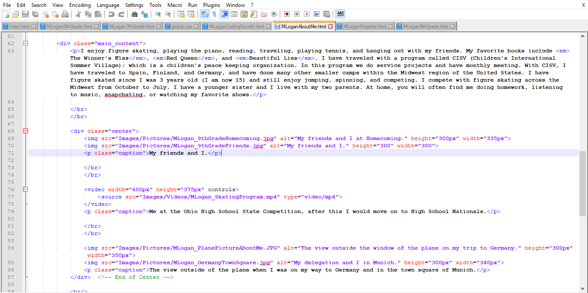

My Website and Code in the Beginning of 7th Grade Portfolio
Coding Progression in 7th Grade...
- I have learned that the <html> element holds the <head> and <body> elements.
- I have learned that inline elements are used for changing how the text looks, and block elements are used for changing the spacing or format of the text.
- I have learned that the <em> element and <i> element both italicize text and are inline elements, but when using a screen reader the text inside the <em> element is spoken in a different voice while the text inside the <i> element is spoken in the same voice as the rest of the text on the web page.
- I have learned that the <strong> element and the <b> both bold text and are inline elements, but when using a screen reader the text inside the <strong> element is emphasized when spoken much more than the text inside the <b> element.
- I have learned that the <br> element is an empty element and an an inline element and is used to move the text down to the next line.
- I have learned that the <title> element surrounds the text that will be shown in the tab above the URL.
- I have learned that the <h1> element is the primary heading, an inline element, and makes the text larger than any of the higher numbered sub-headings.
- I have learned that the <h2> heading formats text smaller than the primary heading.
- I have learned that the <p> element is a block element and tells the browser to separate your content in to paragraphs.
- I have learned that attributes are extra pieces of information attached to elements and goes inside the opening tag before the end bracket.
- I have learned that whitespace are characters like spaces, tabs, carriage returns (enter), and that the web browser will ignore any whitespace you enter and make its own decision on how to format the text.
- I have learned that the <blockquote> element is used when quoting from another person or source.
- I have learned that the <cite> element is used to identify the author or speaker of the a quote and is placed around the author or speakers name.
- I have learned that the <head> element contains all the information that will not be shown on the web page and also includes all the information about the page and instructions for the browser.
- I have learned that the <body> element contains everything you will see on the web page.
- I have learned that the <span> element is used to create a certain style for a small section of text and is an inline element.
- I have learned that nesting is used to correctly format your tags and make them work.
- I have learned that the <!DOCTYPE html> element is on the very first line of code and tells the browser how to interpret the tags.
- I have learned that the <!-- --> element allows you to make comments on your code that can not be seen by the reader.
- I have learned that to include special characters on your web page you need to start with an ampersand character (&), is followed by a specific abbreviation for that character, and ends with a semi colon.
- I have learned that the <ol> element creates an ordered list where the order of the items is important, each entry will automatically get a number or letter in front of each list item.
- I have learned that the <li> is placed a the beginning and end of each list item in an ordered list and unordered list so the browser knows where each entry begins and ends and will place a letter, number, dash, or bullet point there.
- I have learned that the <ul> element contains points that are made in no particular order and will place a dash or bullet point before each list entry.
- I have learned how to create a CSS file that you can save all your styles in so it does not clutter your code.
- I have learned how to link internally and externally within my website.
- I have learned how to create buttons that link to my other pages and style them.
My Website and Code Towards the End of 7th Grade Portfolio

My Website and Code in the Beginning of 8th Grade Portfolio

Coding Progression in 8th Grade...
- I have learned that the <div> element marks a division on the web page or is used to divide a web page into sections, is a block element, and is used to create organized structures containing information that you may want to handle differently on your page using external css.
- I have learned that the <hr> element is used to create a line on your web page and can section off text or divide the web page in to sections (similar to a <div> tag) and can be styled by adjusting the background color, width, or thickness through external css.
- I have learned the <meta> tags (description, keywords, author, copyright, and rating) contain no content, but contain optional attributes that provide the browser information about the page.
- I have learned that the charset <meta> element tells the browser what type of encoding is used for the characters in the code.
- I have learned the elements that make up a table (<th>, <tr>, <td>, and <caption>) and how to style them in external css.
- I have learned how to add borders to elements and style them using external css.
- I have learned how to change the font size, font weight, background color, color of text, and change if it is italicized or not for a specific element in the CSS file.
My Website and Code Towards the End of 8th Grade Portfolio
My Website and Code in the Beginning of 9th Grade Portfolio

Coding Progression in 9th Grade...
- I have learned how to create and format a drop down from the navigation bar.
- I have learned how to find code that I need for my website and adjust it for my purpose.
- I have learned how to research code that I do not know so that the end result is my complete understanding.
- I have learned what css attributes generally apply to most elements and some that are specific to certain elements.
- I have learned css and tags for how to put images in to a slide show format.
- I have learned how to modify code that is already in my Portfolio to create what I want in a different page.
My Website and Code Towards the End of 9th Grade Portfolio


My Website and Code in the Beginning of 10th Grade Portfolio
Coding Progression in 10th Grade...
- I have learned how to create and format a drop down from the navigation bar.
- I have learned how to find code that I need for my website and adjust it for my purpose.
- I have learned how to research code that I do not know so that the end result is my complete understanding.
- I have learned what css attributes generally apply to most elements and some that are specific to certain elements.
- I have learned css and tags for how to put images in to a slide show format.
- I have learned how to modify code that is already in my Portfolio to create what I want in a different page.
My Website and Code Towards the End of 10th Grade Portfolio
Summary of Coding Growth:
Summary of Coding Growth:
I believe that, overall, this year I have accomplished understanding in creating a navigation bar, customizing code that I am familiar with, and how to put images in to a slide show format correctly. I also think that I have room to grow in learning how to create drop downs and more complex navigation bars and styling them using external css. This year, I have struggled in creating drop downs and formatting them to be aesthetically pleasing. I think the time that I felt most victorious this year, when coding my portfolio, is when I, after many fails, made my drop down so that it showed up and the button led to the actual pages. I think that during 10th grade I built on my understanding of coding and went a lot deeper than I did in 9th grade.
Outside Links
The Dayton Regional STEM School (Click Here)